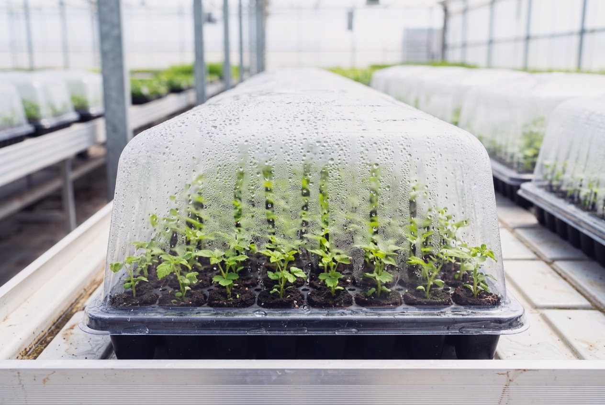
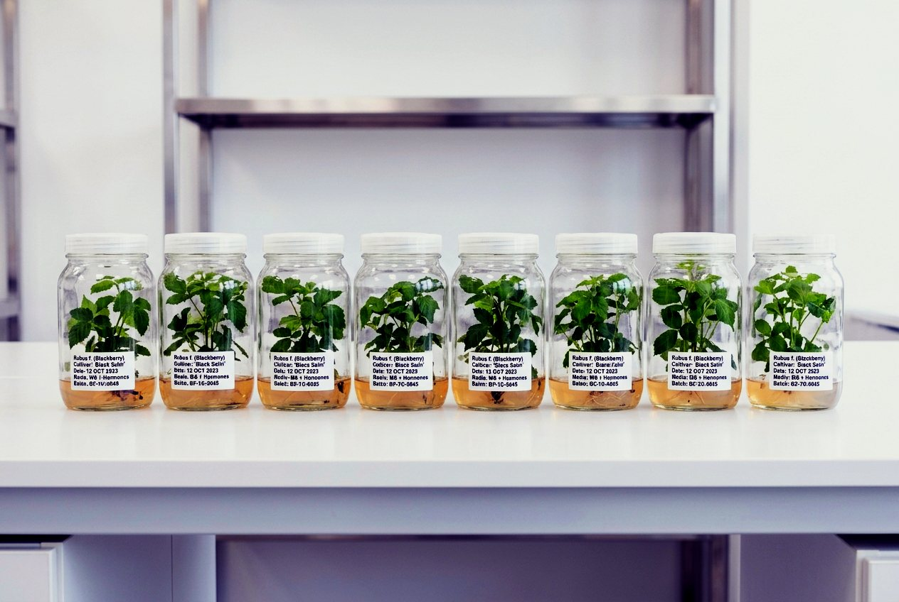
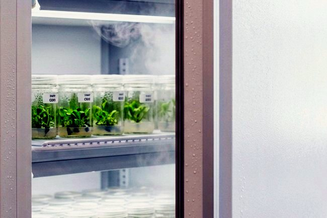
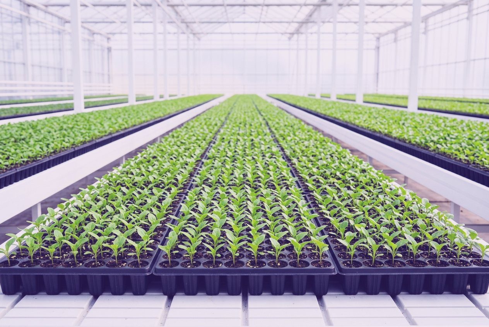

The Laboratory
A blackberry block stays in the ground for a decade and more — long enough that the day your liners are planted, the health, identity, and uniformity of every cane they will ever grow is already decided. Orange rust makes the point without mercy: it is systemic, it arrives invisible in dug canes and root cuttings from infected stock, and there is no cure — only plants to rogue out and seasons to write off. Viruses travel the same road, quiet until a stand thins. That is why planting stock deserves a laboratory instead of a side business.
Carolina Cultures begins with certified, virus-indexed mother stock held in cold isolation at 4 °C, and propagates by meristem culture — the same clean-stock discipline university foundation programs run on. Medium, sterility, and timing parameters are validated against the peer-reviewed Rubus literature and our own production data before any tray ships. What leaves Winston-Salem is genetically identical to the cultivar you ordered, pathogen-screened, hardened, and documented back to its source. The uniform stand you plant this spring is the harvest math you live with until the next replant — we would rather you never think about us again than wonder, in year six, what you planted.
Grounded in extension pathology and caneberry production literature: Penn State Extension, Managing Orange Rust in Brambles · NC State Extension, Southeast Regional Caneberry Production Guide · NMSU Cooperative Extension, Blackberry Production (H-325).

Acclimation — Stage III plantlets under humidity domes.



Production
Certified, virus-indexed source material only. Provenance recorded per line.
Meristem explants surface-sterilized and established on initiation medium. Contamination screened at 14 days.
Subculture cycles under validated cytokinin regimes. Line stability checked by growth signature every passage.
Auxin rooting, then greenhouse hardening to fully acclimated, root-active liners.
72-cell trays, climate-protected packaging, cultivar documents and records in the box.
The Mark
The flask on every box began as a hand-stitched emblem — vine, leaves, and living culture. This is that patch, running: cultures stir, bubbles rise, sap climbs the vine. Tap it.
Company
Carolina Cultures Co. is the plant propagation trade name of Reynoso Biotechnology LLC, a North Carolina company. The laboratory was founded to bring modern tissue-culture discipline to a corner of the nursery trade that still runs heavily on field digging and word-of-mouth stock — and to supply Southeastern growers with clean, documented, uniform blackberry planting stock at straightforward wholesale terms.
We maintain membership in the North American Raspberry & Blackberry Association, operate under North Carolina Department of Agriculture nursery regulation, and stand behind every tray with cultivar documentation and propagation records. If a grower needs paperwork, we have paperwork.